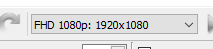
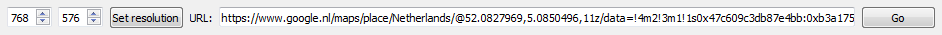
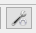
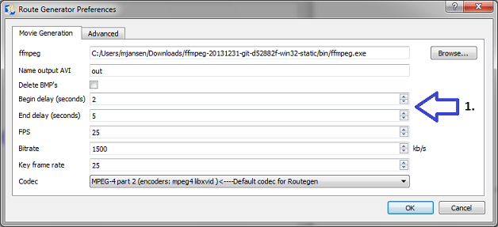
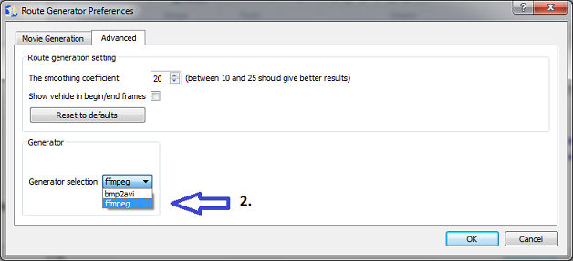
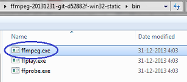

and then select the TIF file containing the Geographic information.
and then select the TIF file containing the Geographic information.
This tutorial explains how to generate route movies, using Route Generator.
Since verision 1.11.0 it is recommended to select the required output resolution of the movie on the toolbar first, before opening
any maps:
.
You can open an image file from an existing map or import a map from Google Maps (see below) or you can grab a frame of a map you filmed with your camera, save it an image file file and use that image as a map background. Or check the size of the screenshot and create a map image yourself, with the same size.
The size of the map does not need to be the same anymore as the resolution of the output movie! When the used map has a higher resolution than the output movie, the program will now automatically scroll the map while trying to keep the vehicle centered on the map. If you don't want scrolling, then you can still use the same resolution for the map as the output movie.
NOTE: Opening a map with a lower resolution of the output video will result in strange effects. Route Generator will generate a warning when you open a map with a resolution that is too low.
Now browse to Google Maps in your browser and locate a map that you want to use. Then copy the link from your browser to the URL field in Route Generator: .
Now click "Go" to start loading the map (this might take a while). You can still drag the map a littlebit until you are satisfied. Then click OK to save the map (so you can re-use it later) and then use it in Route Generator.
After (or before) the map has loaded it is possible to modify the X scale, Y scale factors of the map. In this way it is possible to select a map with a resolution that is higher than the output video resolution. E.g. if you want that the map wil scroll from north to south, pick a Y scale factor higher than 1.0.
Since verision 1.11.0 it is also possible to open a GeoTIFF file. A GeoTIFF file is a TIFF image that contains Geographic referencing information in the image. This way it is possible to map lat/lon coordinates to a position on the map. As a result it is also possible to import a GPX route on a GeoTIFF map.
To open a GeoTIFF file, just open an image with map from the toolbar menu by clicking
and then select the TIF file containing the Geographic information.
It is also possible to import a route from a GPX file from your GPS device, by clicking  . After the file
is opened, you can select the track that you want to import for your route.
. After the file
is opened, you can select the track that you want to import for your route.
After the GPX file is importded successfully, you are asked to import a map from Google Maps. If you do this, the map will automatically load the location where your GPX track is located. The boundary of your route is marked with a green rectangle.
Another option is that you want to use an already imported Google Map, a GeoTIFF file or open the route on an already opened map. If the map has the correct geographic coordinates, the route of your track should be displayed on the map.
 ).
Now start drawing a route, by clicking and dragging your mouse over the map.
You can reset the route by deactivating draw mode and activating it again.
If you're satisfied with the route you can do some adjustments to the way the route is displayed (next section).
).
Now start drawing a route, by clicking and dragging your mouse over the map.
You can reset the route by deactivating draw mode and activating it again.
If you're satisfied with the route you can do some adjustments to the way the route is displayed (next section).
You can add custom icons for vehicles by adding your own icon files by clicking .
This button will open the Vehicle Settings dialog, where you can add new vehicles. The following icon formats should be accepted: *.gif, *.png, *.jpg, *.svg
It's recommended to add icons with a transparent background (i.e. *.gif or *.png with an alpha layer).
In this dialog you can also modify the size, angle, etc. of every vehicle. Also it is possible to move the vehicle positions relative to the route line.
When the vehicle is an animated image (e.g. animated gif), Route Generator will playback the animation in the generated movie!
 (or from menu: Tools->Playback).
(or from menu: Tools->Playback). (or from menu: Tools->Stop)
(or from menu: Tools->Stop)
 (or from menu: Tools->Generate route).
For each frame of the movie, Route Generator will generate a *.bmp file in the selected directory.
Next, these frames (*.bmp files) will be converted to an AVI movie, using bmp2avi or ffmpeg which are
by default included with Route Generator.
(or from menu: Tools->Generate route).
For each frame of the movie, Route Generator will generate a *.bmp file in the selected directory.
Next, these frames (*.bmp files) will be converted to an AVI movie, using bmp2avi or ffmpeg which are
by default included with Route Generator.
After the movie is generated, you can import it in you video editing software. You can optionally
finetune the movie by adding extra begin/end frames that you pick from the directory containing
the generated *.BMP files.
FFmpeg is distributed with the Windows version for Route Generator and will be selected as the default at installation. The CODEX FFmpeg by Gyan Doshi is included from: https://www.gyan.dev/ffmpeg/builds/#about-these-builds
FFmpeg works faster than bmp2avi and supports more different codec types (H.264 is the default). Using this generator, it's also possible to select a different bitrate for the generated output video.
If you still want to use Bmp2Avi as generator, you can always switch back using Edit->Preferences (see section: Modifying BMP2AVI/FFmpeg preferences at the end of the tutorial).
It's possible to modify the settings that Bmp2Avi or FFmpeg uses to
convert BMP's to an AVI file. To change these settings open the preferences through Edit->Preferences:

In this dialog you can change these settings:
Here you can change the location of bmp2avi.exe or ffmpeg.exe (Windows only), in case you have it in a different location or for some reason Route Generator is unable to find it anymore.
When you check this, the generated image frames (BMP's) will automatically be deleted after the conversion. The first and last frame will not be deleted, so you can still use them in your video editing software.
You can select a delay in seconds to add before the beginning or after the end of the generated movie (this delay will not be visible in the preview, only in the generated movie)
Here you can change the frame rate of the generated AVI (the default is 25).
Here you can change the bitrate (in kb/s) of the generated movie.
This value indicates after how many frames (Group of Pictures) a key frame is created (the default is 25).
Here you can change the codec that Bmp2Avi or FFMpeg uses to generate the movie. This can result in smaller or higher quality movies, but it's possible that not all codecs are accepted by your video editing software. So, first check which codes are supported by you video editor.
Here you can change the file type of the frames (images) that are used to generate your movie. You can choose compressed file types like jpg, png. This will result in less diskspace usage for the genrated frames. However, frame (movie) generation itself will take longer.
Here you can change the file type (container) that is used to store your movie in. Again, check which file types are supported by your video editor. Possible options are: avi, mov, mp4, mpg, mkv, wmv
For advanced (FFmpeg) users!
Here you can tweak your custom commandline parameters that are sent to FFmpeg for generating the movie. Don't modify the -i map %05d argument, because the input frames will always be mapXXXXX.bmp files! Unless you know what you are doing of course.
In the Advanced tab it's possible to switch movie generator between ffmpeg or bmp2avi on Windows (on Linux FFmpeg this is the only option).

The program will then ask you for the location of the FFmpeg or bmp2avi executable. You will have to browse for the correct executable (ffmpeg.exe or bmp2avi.exe).
Since version 1.7.1 FFMpeg is also included in a sub-directory of the Route Generator installation.

After you have selected the correct generator, you will need to restart the Route Generator Preferences dialog, to re-configure your video settings for FFmpeg or Bmp2Avi.